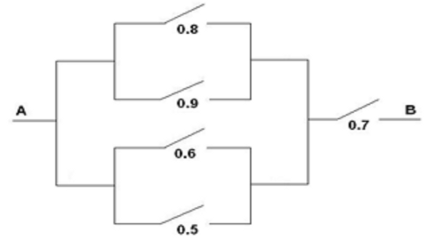

D.1 Capítulo 1 Introducción a la simulación
D.1.1 Ejercicio 1.1
Enunciado 1.1:
Sea \((X,Y)\) es un vector aleatorio con distribución uniforme en el cuadrado \([-1,1]\times\lbrack-1,1]\) de área 4.
- Aproximar mediante simulación \(P\left(X + Y \leq 0 \right)\) y compararla con la probabilidad teórica (obtenida aplicando la regla de Laplace \(\frac{\text{área favorable}}{\text{área posible}}\)).
Generamos nsim = 10000 valores del proceso bidimensional:
set.seed(1)
nsim <- 10000
x <- runif(nsim, -1, 1)
y <- runif(nsim, -1, 1)La probabilidad teórica es 1/2 y la aproximación por simulación es la frecuencia relativa del suceso en los valores generados (para calcularla podemos aprovechar que R maneja internamente los valores lógicos como 1, TRUE, y 0, FALSE):
indice <- (x + y < 0)
sum(indice)/nsim## [1] 0.4996Alternativamente (la frecuencia relativa es un caso particular de la media) se puede obtener de forma más simple como:
mean(indice)## [1] 0.4996- Aproximar el valor de \(\pi\) mediante simulación a partir de \(P\left( X^2 +Y^2 \leq 1 \right)\).
set.seed(1)
n <- 10000
x <- runif(n, -1, 1)
y <- runif(n, -1, 1)
indice <- (x^2+y^2 < 1)
mean(indice)## [1] 0.7806pi/4## [1] 0.7853982pi_aprox <- 4*mean(indice)
pi_aprox## [1] 3.1224Generamos el correspondiente gráfico (ver Figura D.1) (los puntos con color negro tienen distribución uniforme en el círculo unidad; esto está relacionado con el método de aceptación-rechazo, ver Ejemplo ??, o con el denominado método hit-or-miss).
# Colores y símbolos dependiendo de si el índice correspondiente es verdadero:
color <- ifelse(indice, "black", "red")
simbolo <- ifelse(indice, 1, 4)
plot(x, y, pch = simbolo, col = color,
xlim = c(-1, 1), ylim = c(-1, 1), xlab="X", ylab="Y", asp = 1)
# asp = 1 para dibujar circulo
symbols(0, 0, circles = 1, inches = FALSE, add = TRUE)
symbols(0, 0, squares = 2, inches = FALSE, add = TRUE)
Figura D.1: Valores generados con distribución uniforme bidimensional, con colores y símbolos indicando si están dentro del círculo unidad.
D.1.2 Ejercicio 1.2
Enunciado 1.2:
Consideramos el experimento de Bernoulli consistente en el lanzamiento de una moneda.
- Empleando la función
sample, obtener 1000 simulaciones del lanzamiento de una moneda(0 = cruz, 1 = cara), suponiendo que no está trucada. Aproximar la probabilidad de cara a partir de las simulaciones.
set.seed(1)
nsim <- 10000
x <- sample(c(cara = 1, cruz = 0), nsim, replace = TRUE, prob = c(0.5,0.5))
mean(x)## [1] 0.4953barplot(100*table(x)/nsim, ylab = "Porcentaje") # Representar porcentajes 
Figura D.2: Frecuencias relativas de los valores generados con distribución Bernoulli (aproximaciones por simulación de las probabilidades teóricas).
- En R pueden generarse valores de la distribución de Bernoulli
mediante la función
rbinom(nsim, size=1, prob). Generar un gráfico de lineas considerando en el eje \(X\) el número de lanzamientos (de 1 a 10000) y en el eje \(Y\) la frecuencia relativa del suceso cara (puede ser recomendable emplear la funcióncumsum).
set.seed(1)
nsim <- 1000
p <- 0.4
x <- rbinom(nsim, size = 1, prob = p) # Simulamos una Bernoulli
# Alternativa programación: x <- runif(nsim) < p
mean(x)## [1] 0.394n <- 1:nsim
plot(n, cumsum(x)/n, type="l", ylab="Proporción de caras",
xlab="Número de lanzamientos", ylim=c(0,1))
abline(h=p, lty=2, col="red")
Figura D.3: Gráfico de convergencia de la aproximación por simulación a la probabilidad teórica.
D.1.3 Ejercicio 1.3
Enunciado 1.3:
Simular el paso de corriente a través del siguiente circuito, donde figuran las probabilidades de que pase corriente por cada uno de los interruptores:

Considerar que cada interruptor es una variable aleatoria de Bernoulli independiente para simular 1000 valores de cada una de ellas.
TRUE) y 0 (FALSE).
Recíprocamente, cualquier número puede ser tratado como lógico (al estilo de C).
El entero 0 es equivalente a FALSE y cualquier entero distinto de 0 a TRUE.
set.seed(1)
nsim <- 10000
x1 <- rbinom(nsim, size=1, prob=0.8)
x2 <- rbinom(nsim, size=1, prob=0.9)
z1 <- x1 | x2 # Operador lógico "O"
x3 <- rbinom(nsim, size=1, prob=0.6)
x4 <- rbinom(nsim, size=1, prob=0.5)
z2 <- x3 | x4
z3 <- z1 | z2
x5 <- rbinom(nsim, size=1, prob=0.7)
fin <- z3 & x5 # Operador lógico "Y"
mean(fin)## [1] 0.692D.1.4 Ejercicio 1.4
Enunciado 1.4 (el problema del Caballero de Méré):
En 1651, el Caballero de Méré le planteó a Pascal una pregunta relacionada con las apuestas y los juegos de azar: ¿es ventajoso apostar a que en cuatro lanzamientos de un dado se obtiene al menos un seis? Este problema generó una fructífera correspondencia entre Pascal y Fermat que se considera, simbólicamente, como el nacimiento del Cálculo de Probabilidades.
- Escribir una función que simule el lanzamiento de \(n\) dados. El
parámetro de entrada es el número de lanzamientos \(n\), que toma
el valor 4 por defecto, y la salida debe ser
TRUEsi se obtiene al menos un 6 yFALSEen caso contrario.
deMere <- function(n = 4){
lanz <- sample(1:6, replace=TRUE, size=n)
return(6 %in% lanz)
}
n <- 4
lanz <- sample(1:6, replace=TRUE, size=n)
lanz## [1] 3 5 1 66 %in% lanz## [1] TRUE- Utilizar la función anterior para simular \(nsim=10000\) jugadas de este juego y calcular la proporción de veces que se gana la apuesta (obtener al menos un 6 en \(n\) lanzamientos), usando \(n=4\). Comparar el resultado con la probabilidad teórica \(1-(5/6)^{n}\).
set.seed(1)
n <- 4
nsim <- 10000
mean(replicate(nsim, deMere(n)))## [1] 0.51481-(5/6)^n## [1] 0.5177469D.1.5 Ejercicio 1.5
Enunciado 1.5 (variación del problema del coleccionista, cadena de Markov):
Continuando con el ejemplo de la Sección 1.1.1 (álbum con \(n = 75\) cromos y sobres con \(m = 6\)). A partir de \(nsim=2000\) simulaciones de coleccionistas de cromos, aproximar por simulación la evolución del proceso de compra de un coleccionista (número de cromos distintos dependiendo de los sobres comprados).
Generamos nsim = 2000 simulaciones de coleccionistas de cromos:
# Parámetros
n <- 75 # Número total de cromos
m <- 6 # Número de cromos en cada sobre
repe <- TRUE # Repetición de cromos en cada sobre
# Número de simulaciones
nsim <- 2000
# Resultados simulación
nsobres <- numeric(nsim) # Número de sobres
evol <- vector("list", nsim) # Evolución del número de cromos
# Por comodidad se podría haber fijado un número máximo de cromos
# evol <- matrix(nrow = max_len, ncol = nsim)
# Fijar semilla
set.seed(1)
# Bucle simulación
for (isim in 1:nsim) {
# seed <- .Random.seed # .Random.seed <- seed
# Simular
album <- logical(n)
evolucion <- c()
i <- 0 # Número de sobres
repeat{
i <- i + 1
sobre <- sample(n, m, replace = repe)
album[sobre] <- TRUE
ncromos <- sum(album)
evolucion <- c(evolucion, ncromos)
if (ncromos == n) {
nsobres[isim] <- i
evol[[isim]] <- evolucion
break
}
}
}
# simres::plot.sr(nsobres)evol contiene las realizaciones de la cadena de Markov.
# plot(evol[[1]], type = "l")Combinar realizaciones del proceso (evoluciones del número de cromos):
# Se extienden a la máxima longitud
max_len <- max(lengths(evol)) # max(sapply(evol, length))
evol <- sapply(evol, function(x) c(x, rep(n, max_len - length(x))))
str(evol)## num [1:167, 1:2000] 6 12 16 21 23 25 30 34 37 38 ...Aproximar cuantiles (intervalos de predicción):
alpha <- 0.05
limits <- apply(evol, 1, quantile, probs = c(alpha, 0.5, 1-alpha))
str(limits)## num [1:3, 1:167] 5 6 6 10 11 12 14 16 18 18 ...
## - attr(*, "dimnames")=List of 2
## ..$ : chr [1:3] "5%" "50%" "95%"
## ..$ : NULLEjemplo, aproximación de los límites (y mediana) para el número de cromos en el álbum después de comprar 20 sobres:
limits[, 20]## 5% 50% 95%
## 55 60 64hist(evol[20, ], breaks = "FD", freq = FALSE,
main = "", xlab = "Número de cromos distintos (en 20 sobres)")
abline(v = limits[, 20], lty = 2)
Representar las realizaciones del proceso y los intervalos de predicción puntuales:
matplot(1:max_len, evol, type = "l", col = "lightgray", lty = 1,
xlab="Número de sobres", ylab="Número de cromos distintos")
matlines(1:max_len, t(limits), lty = c(2, 1, 2), col = 1)